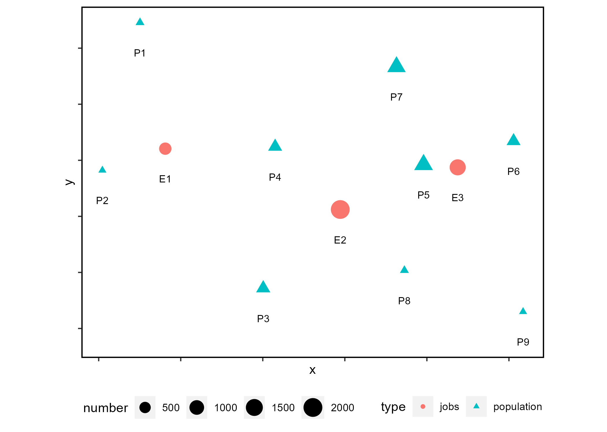
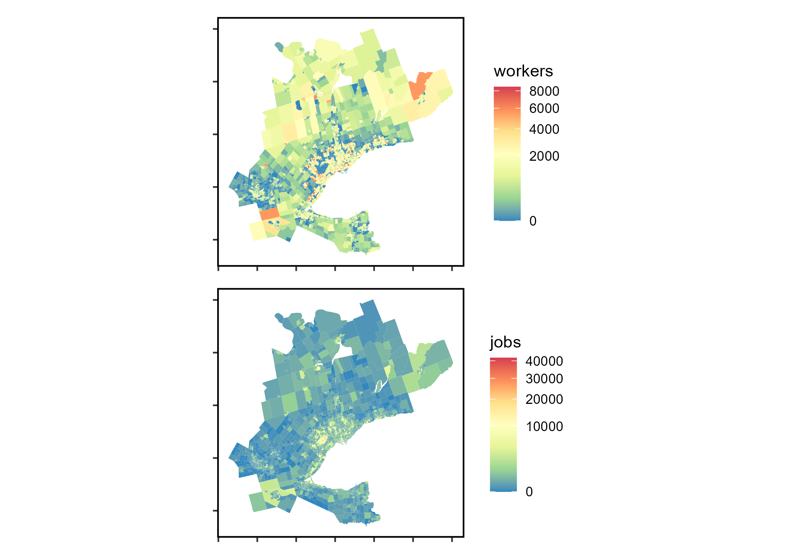

This repository contains working files for a data-package to accompany the newly proposed proportionally allocated accessibility measure referred to as spatial availability. This measure is within the family of transport planning accessibility measures. This data-package is used in the Spatial Availability Measure manuscript here (currently a work in progress).
All files are still a collaborative work in process. Contributors: Anastasia Soukhov, Antonio Paez, Chris Higgins, and Moataz Mohamed.
This data-package, includes toy data, empirical data, the proposed spatial availability function (sp_avail), and developed vignettes demonstrating an analysis and comparison of conventional accessibility and spatial availability.
What empirical data is included?
The 2016 Transportation Tomorrow Survey (TTS) data for the the Golden Horseshoe Area (GHA) in the province of Ontario, Canada (43.6°N 79.73°W) is included; specifically the location of origins and destinations defined by Traffic Analysis Zones (TAZ), the number of jobs and workers at each origin and destination, and the trips from origin to destination for the morning home-to-work commute. Also included are calculated travel times by car (calculated via r5r) and a derived impedance function values corresponding to the cost of travel based on the trip length distribution.

Setup
Installation:
devtools::install_github("soukhova/AccessPack",
build_vignettes = TRUE)Libraries:
Toy Data Overview
This data is hypothetical and created to explain the spatial availability measure in the first vignette. See the location and number of opportunities of employment centers and population centers in the plot below:

Below is a sample of the OD table (Employment Center 1) for the theoretical toy data:
| Origin | Destination | Population | Jobs | distance | catchments | trips |
|---|---|---|---|---|---|---|
| Population 1 | Employment Center 1 | 260 | 750 | 2548.060 | 1 | 88 |
| Population 2 | Employment Center 1 | 255 | 750 | 1314.074 | 1 | 591 |
| Population 3 | Employment Center 1 | 510 | 750 | 3374.923 | 0 | 24 |
| Population 4 | Employment Center 1 | 495 | 750 | 2170.200 | 0 | 157 |
| Population 5 | Employment Center 1 | 1020 | 750 | 5111.631 | 0 | 2 |
| Population 6 | Employment Center 1 | 490 | 750 | 6881.320 | 0 | 1 |
| Population 7 | Employment Center 1 | 980 | 750 | 4846.602 | 0 | 3 |
| Population 8 | Employment Center 1 | 260 | 750 | 5302.901 | 0 | 1 |
| Population 9 | Employment Center 1 | 255 | 750 | 7770.661 | 0 | 0 |
TTS 2016 Data Overview
The accessibility and spatial availability of this TTS 2016 data is analysed in the second vignette. See the plot below for the spatial visualization of the number of workers and jobs within each TAZ:

Sample of TTS 2016 OD data (OD pairs with 2 trips):
| Origin | Destination | trips | travel_time | f |
|---|---|---|---|---|
| 3640 | 3718 | 2 | 24 | 0.022 |
| 3640 | 3849 | 2 | 20 | 0.027 |
| 3640 | 3866 | 2 | 20 | 0.027 |
| 3879 | 3877 | 2 | 8 | 0.033 |
| 3879 | 4003 | 2 | 17 | 0.030 |
| 3879 | 4007 | 2 | 18 | 0.029 |
| 3879 | 63 | 2 | 24 | 0.022 |
| 8417 | 3152 | 2 | 43 | 0.007 |
| 8417 | 3707 | 2 | 62 | 0.002 |
| 8417 | 3816 | 2 | 65 | 0.001 |
| 8417 | 55 | 2 | 82 | 0.000 |
| 8417 | 8415 | 2 | 43 | 0.007 |
Summary statistics of TTS 2016 OD data, where trips are the number of journeys from origin to destination, calculated travel_time by car, and f is the impedance value:
| Origin | Destination | trips | travel_time | f | |
|---|---|---|---|---|---|
| Length:99569 | Length:99569 | Min. : 1 | Min. : 0.1 | Min. :0.0000 | |
| Class :character | Class :character | 1st Qu.: 14 | 1st Qu.: 13.0 | 1st Qu.:0.0150 | |
| Mode :character | Mode :character | Median : 22 | Median : 20.0 | Median :0.0259 | |
| NA | NA | Mean : 31 | Mean : 23.4 | Mean :0.0228 | |
| NA | NA | 3rd Qu.: 37 | 3rd Qu.: 30.0 | 3rd Qu.:0.0316 | |
| NA | NA | Max. :1129 | Max. :179.0 | Max. :0.0344 |
See .Rmd in the \data-raw folder for additional details on how the datasets were compiled. See the vignettes for detailed examples using the datasets and comparing comparison of the conventional accessibility and spatial availability (function sp_avail) measures.